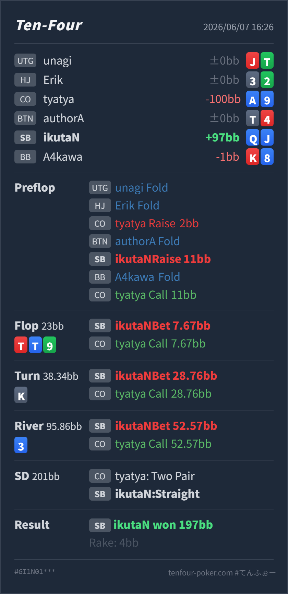

T4 HAND REVIEW
SB Q♦J♦ の 3bet pot / turn straight value レビュー
GTO基準で大きく崩れたハンドではありません。preflop の Q♦J♦ は共有済みレンジではSB vs COでcall寄りのcontinue候補なので、pure 3betとして固定しない点だけ注意しますが、postflopはdrawからmade handへ移った後にSPRへ合わせて打ち切れている良いラインです。
Hero: SB
Q♦ J♦Villain: CO
A♦ 9♦Board:
T♥ T♦ 9♣ K♠ 3♦- 主要論点: SB vs COで
QJsを3betに回した後、paired board の3bet potでdrawからvalueへどう切り替えるか。 - GTO基準の総評: 3bet sizeは
2BB openに対して自然です。hand選択はやや攻撃寄りですが、flop小bet、turn大きめvalue、river all-in は目的が一貫しています。 - 次回の判断基準:
QJsはplayabilityが高いので、3betだけでなくcallにも残す。3betした場合は、hitした後に相手のTx / 9x / Kxから取り切る計画を持つ。 - 5枚役確認: River時点のHeroは
K♠ Q♦ J♦ T♥ 9♣のストレートです。上位にはTT、99、T9、KTなどのfull house / quadsがあります。
ハンド要約
- Hero
- SB
Q♦ J♦ - Villain
- CO
A♦ 9♦ - 形式
- T4 6MAX Cash
- Board
T♥ T♦ 9♣ K♠ 3♦- ライン
- CO openにSB 3bet、CO call。SBがflopから3 street打ち切り、river all-inまでcallされる
- Showdown
- SB Hero: ストレート, CO: Tと9のツーペア
- Result
- SB Hero won
197BB, rake4BB

判断のズレ
| 論点 | その場で置きがちな見立て | どこがズレやすいか | 次回の基準 |
|---|---|---|---|
| preflop QJs の扱い | suited broadwayなのでSBから強く3betしてよい | QJs はCO openに対して十分continueできますが、共有済み基準ではcall寄りに残るhandです。3betは悪くありませんが、強いvalueとして固定すると、callで守る中上位suited handが薄くなります。 | SB vs COでは、QJs はcallを基本に残しつつ、3betは混ぜる候補として扱う |
| paired board でのvalue継続 | boardがpairedなので、straightでも慎重にcheckしたくなる | full house候補はありますが、COのcall rangeにはTx、9x、A9s、Kx、pair+drawも残ります。SPRが小さくなっているので、強いmade handをcheckに寄せすぎるとworse handから取る機会を失います。 | SPRが低い3bet potでは、上位役の存在を確認しつつ、worse made hand がcallできるならvalueを打ち切る |
ストリート別レビュー
| ストリート | その時点の見え方 | 実ハンドの位置づけ | 評価 | その場の一手 |
|---|---|---|---|---|
| Preflop | COの 2BB openに対し、SBの 11BB 3betは基準サイズ付近です。COの小さめopenでSBは広くcontinueできますが、OOPなのでpostflopの実現率は悪くなります。 | Q♦J♦ はplayabilityが高い suited broadway です。共有済み基準ではcall寄りですが、3betに混ぜても戦えるhandです。 | やや攻撃寄り | 3betするなら今回のsizeでよいです。ただし、毎回3betではなくcallにも残す整理にします。 |
Flop T♥ T♦ 9♣ | SBにはoverpair、AK/AQ、強いbroadwayがあり、COにはTx、99、9x、suited broadwayが残ります。paired boardなのでCOもかなり触れています。 | Heroはまだmade handではありませんが、Kまたは8でstraightになるopen-ended drawを持ちます。Q♦J♦ はsemi-bluff候補です。 | 良い | 1/3 pot は自然です。大きく打ちすぎず、fold equityとdrawの実現を両方残します。 |
Turn K♠ | KはSBのAK/KK/KQを強く見せるカードで、Hero自身もstraightを完成させます。COのTxや9xはまだ残り、Kxも一部改善します。 | Heroは強いvalueです。ただしboardがpairedなので、99、T9、KT、TTには負けます。 | 良い | 大きめbetでTx、Kx、9xの一部からvalueを取り、riverの残りスタックを自然に入れられる形にします。 |
River 3♦ | riverは大きく構造を変えないblank寄りです。COがturn大きめbetをcallした後でも、Tx、9x、Kx、stubbornなpairが残ります。 | Heroのstraightはfull houseには負けますが、COのworse made handに対して十分valueがあります。 | 良い | 残り 52.57BB into 95.86BB は打ち切りでよいです。SPRが低く、checkで取り逃がすよりvalueを押します。 |
持ち帰り
QJsはSB vs COでcontinueしやすいが、3bet専用ではなくcallにも残す。- paired board でも、SPRが低くworse made handが残るなら、強いstraightはvalueを打ち切れる。
- 上位役があるboardでは、役の強さだけでなく、相手がcallするworse rangeを具体的に置いてbet sizeを決める。
exploit 補足
- 実際にCOは
A♦9♦で、turn大きめbetとriver all-inをcallしています。この相手には、強いmade handを小さく抑えすぎず、しっかり打つ方が収益的です。 - ただし、この結果だけでpreflopの
QJsを常に3betへ固定しません。相手がcallしすぎるreadがあるときの exploit と、GTO基準のhand配置は分けて扱います。